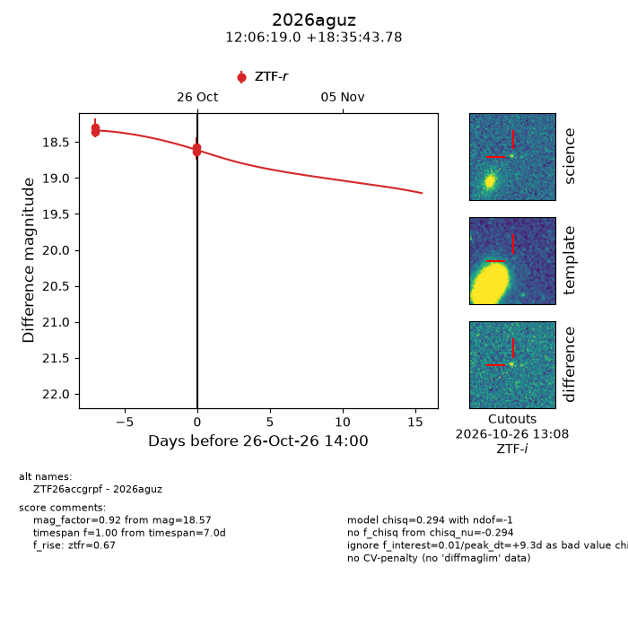
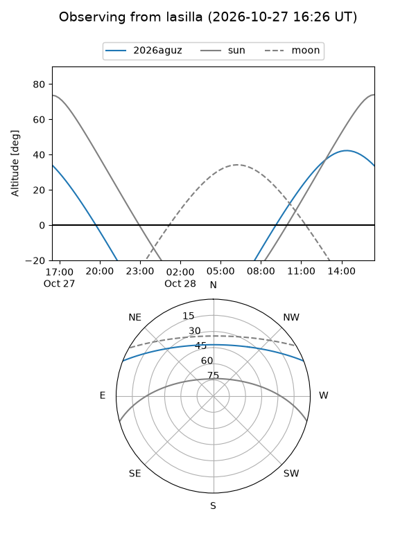
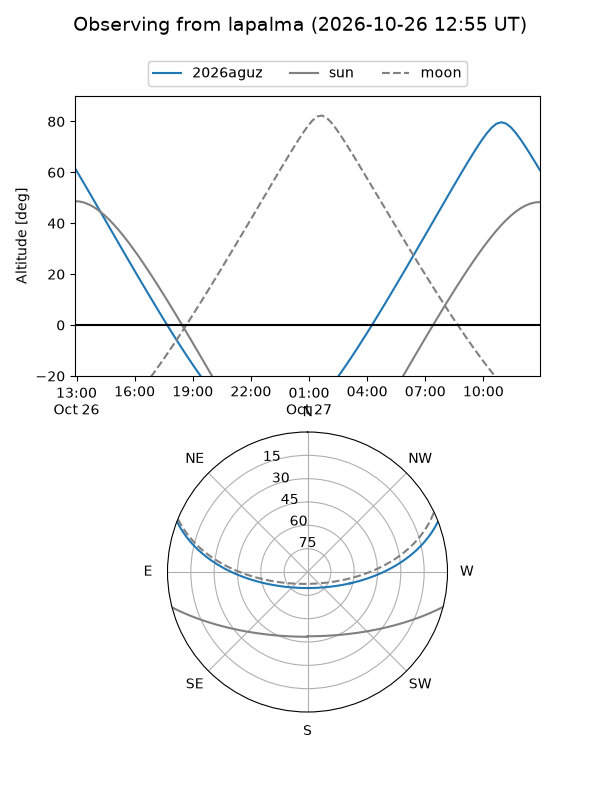
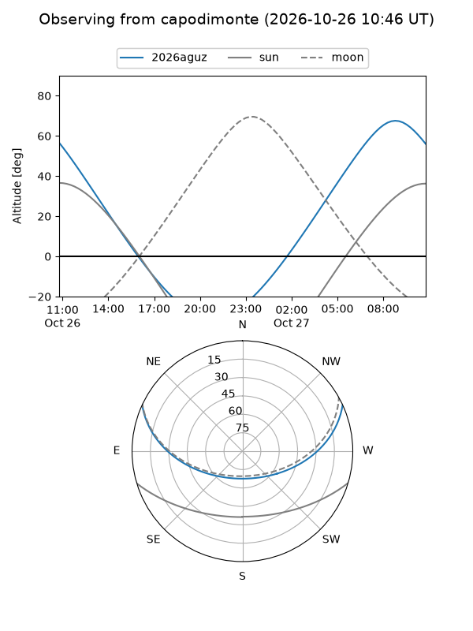
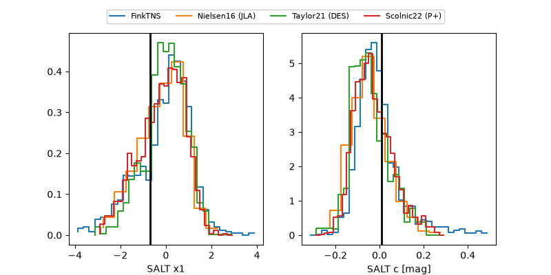

2026aguz
Target 2026aguz at 2026-10-26 14:01
Aliases and brokers:
FINK-ZTF: ztf.fink-portal.org/ZTF26accgrpf
Lasair-ZTF: lasair-ztf.lsst.ac.uk/objects/ZTF26accgrpf
ALeRCE-ZTF: alerce.online/object/ZTF26accgrpf
YSE-PZ: ziggy.ucolick.org/yse/transient_detail/2026aguz
TNS name: wis-tns.org/object/2026aguz
Direct TNS query: direct search
alt names
ZTF26accgrpf (ztf,fink_ztf)
2026aguz (tns,yse)
Coordinates:
equatorial (ra, dec) = 181.5792,+18.59549
equatorial (HMS+DMS) = 12:06:19.01,+18:35:43.78
galactic (l, b) = (249.9949,+76.56547)
Flags:
peak dt: +9.3
Photometry:
last ztfr=18.57
4 ztfr detections
Lightcurve

Visibility



Additional plots
